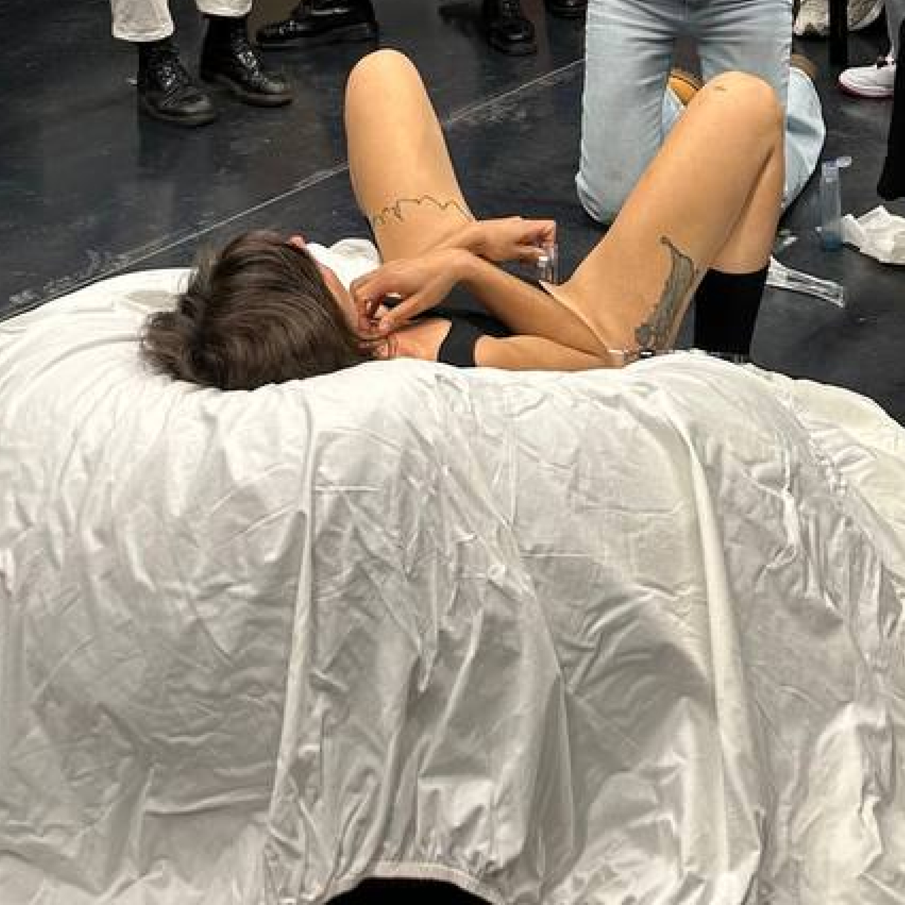
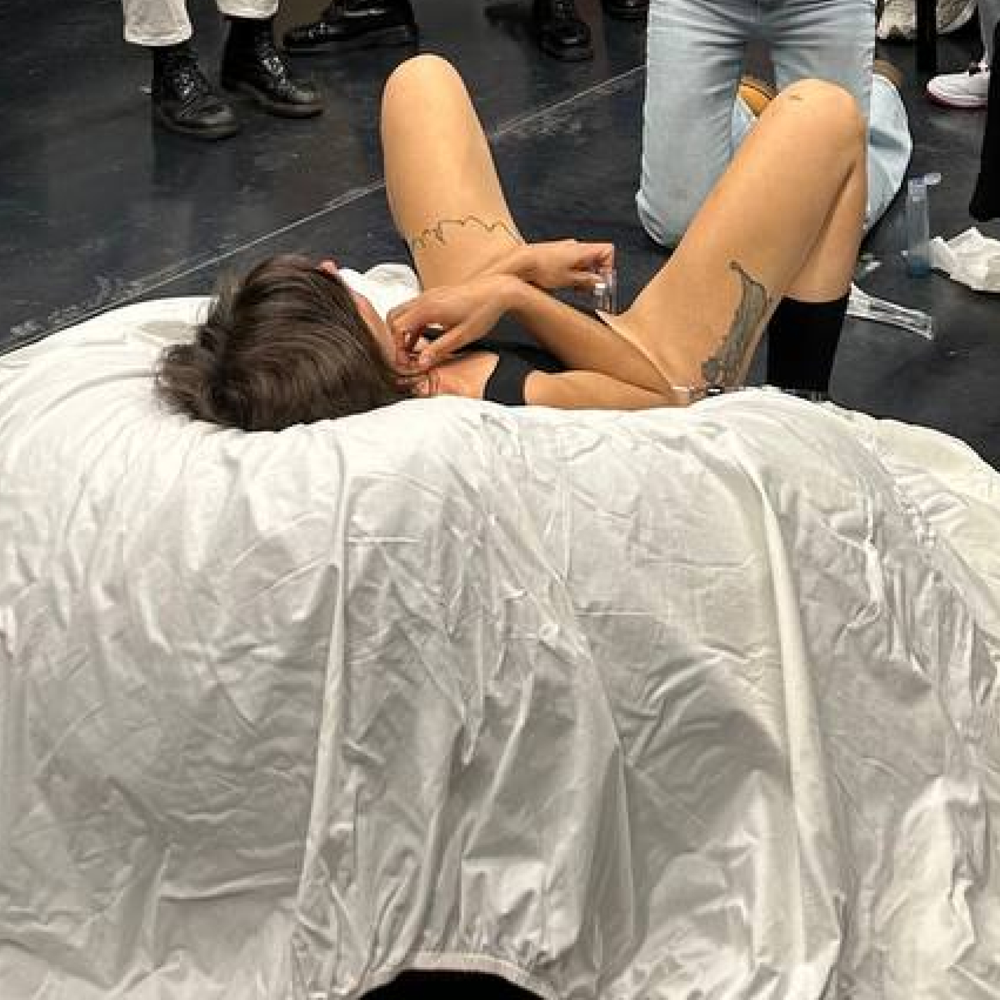

Biofilie Lab: Growing vaginal microbiome at home
Biofilie is a kitchen-based educational lab developed within Alma, a project by Giulia Tomasello and Isabel Farina. The format invites participants to grow and observe their vaginal microbiome through hands-on practices, using simple tools and adapted laboratory methods. These activities connect scientific knowledge with personal awareness, encouraging reflection not only on intimate health but also on the cultural, political, and social dimensions of the microbiome.
The workshop introduces the Biofilie Lab protocol, a step-by-step method that makes it possible to cultivate and observe the vaginal microbiome safely at home. This practical experience helps participants learn how their body coexists with microbes, while also prompting reflection on how science describes and studies this relationship. The format also addresses citizen science—research practices that involve the direct participation of non-experts—and asks how people outside of traditional laboratories can contribute to scientific knowledge.
At the same time, Biofilie highlights that scientific knowledge is not neutral. It points to the ways research on the vaginal microbiome can be influenced by social factors such as gender, cultural attitudes, and historical power imbalances.
The workshop therefore combines perspectives from art, design, microbiology, anthropology (the study of people and cultures), and feminist theory to encourage participants to see the microbiome not only as a biological subject but also as a site of political and personal meaning.
Through this interdisciplinary approach, Biofilie fosters collective learning, creates open conversations around a topic often considered taboo, and empowers participants to better understand and reflect on their own intimate health.
with
Giulia Tomasello is an interaction designer and educator with extensive experience in speculative design and intimate health technologies. In 2018, she received the STARTS Prize for her project Future Flora, followed by international recognition such as the World Omosiroi Japanese Award (2020). She teaches at universities across Italy and Europe, focusing on soft wearables and biological tissue exploration. Giulia is also co-founder of Bruixas Lab, a nomadic space for sex-biohacking and ritual practices; Tides, a sensorial vibrator designed for women in menopause; and Hogar, a cultural association educating young people on gender equity.
Isabel Farina is a medical anthropologist and co-founder of ALMA. She is completing her PhD in Health Management and Service Design at Politecnico di Milano, where she has studied and evaluated mental health services for children and adolescents. Previously, she worked as Senior Researcher at Experientia, one of the first human-centered design consultancies in Italy, and as a consultant on several social design projects. She is also an active feminist, engaged in collectives advocating for autonomy and equity in gender health.
protocol
The Biofilie workshop guides participants through a hands-on process of preparing, cultivating, and observing their vaginal microbiome using safe, accessible tools and adapted laboratory protocols. The activity begins with an introduction to the vaginal microbiota—explaining how microorganisms such as lactobacilli protect our bodies by keeping the vaginal pH balanced and preventing harmful bacteria from spreading. This scientific framing provides the basis for understanding why and how participants will attempt to cultivate their own samples.
Participants then learn how to prepare a growth medium, a gel-like substance made from everyday ingredients such as fish food, agar-agar, and yeast extract, mixed and sterilised in a pressure cooker. This medium serves as “food” for the bacteria and fungi, allowing them to grow visibly on Petri dishes. The workshop also introduces techniques for maintaining sterility and preventing unwanted contamination, using simple practices like working near candles, sterilising tools with alcohol, and sealing Petri dishes with parafilm.
Once the medium is ready, participants are invited to collect their own vaginal samples using swabs or a speculum (where comfortable and accessible). These samples are then carefully transferred onto the Petri dishes through a process called inoculation. The dishes are placed in small incubators at body temperature (around 37°C), where colonies of microorganisms—such as Candida albicans or different species of lactobacilli—begin to grow. Over the following hours and days, participants observe how different organisms thrive, change, and sometimes compete for space.
The protocol emphasises responsibility and care: while the organisms come from participants’ own bodies and are generally safe, they must still be handled with caution. Participants are instructed in safe disposal methods (such as sterilisation before discarding) and encouraged to reflect on the meaning of “contamination”—not as a moral flaw, but as a biological interaction that reveals the interconnectedness of our microbiomes.
Throughout the process, the workshop balances technical instruction with critical reflection. Participants are encouraged to discuss what it means to bring microbiology into the kitchen, how intimate health is often surrounded by stigma, and how feminist and citizen science practices can reclaim access to knowledge and tools. The protocol thus serves both as a practical guide to observing the vaginal microbiome and as a framework for questioning cultural taboos, medical hierarchies, and the politics of scientific knowledge.
resources
↗ Protocol instructions
session
The workshop took place on November 24 at the FabLab of SUPSI University campus in Mendrisio.
-
Tomasello, G., and Farina, I.
 
